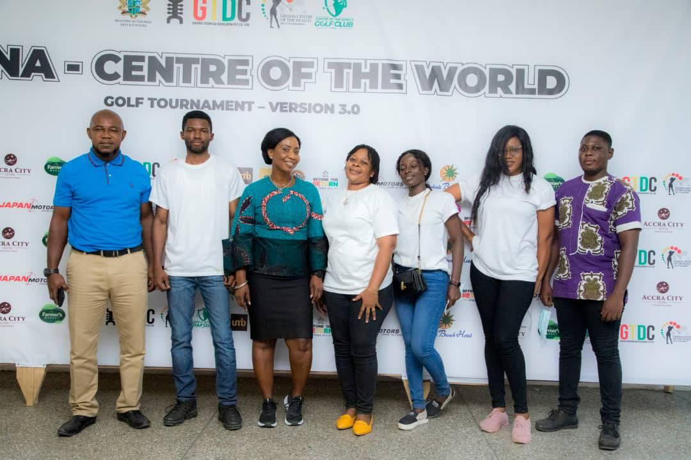

I am a passionate aspiring Full-Stack Javascript developer based in Tema/Ghana. 🧑💻 I specialise in Web Development, JavaScript and hybrid mobile app development with IONIC. I love to network, join new communities and to add value to communities globally 🌍✨
🌐 Languages : English, Twi(Native Ghanaian Language), Ewe(Native Ghanaian Language).
Currently I am a Full-Stack Software Engineer Trainee at AmaliTech Training Academy. I have been enrolled in a Full-Stack software engineering apprenticeship program at AmaliTech to be sucessfully recruited into AmaliTech Services to work as a professional Full-Stack Engineer.
Skills: html, css, JavaScript, React.JS, Vue.JS,Node.JS, Python, Django🔥🔥👨💻👨💻⌨️ 🌍✨
Below is an introductory video prologue that inspires my goal of me reaching the status of a Full Stack Software Engineer . 📷📸🔥🔥👨💻👨💻⌨️ 🌍✨


My recent project was a virtual tour prototype website that I developed for the Ghana Tourism Development Company. 👉 check it out !
I had a great time at the Ghana Tourism Development Company, where I was present during the launch of the Ghana Center Of The World Golf Tournament in Tema/Ghana
I usually spend my time doing cool projects.You can checkout my opensource projects on my github repositories if you are more tech savy, here is my GitHub link.
I studied a Bsc. in Information Technology at Valley View University. My Final Year Project involved a research work to develop a social protection management information system to register potential members online to make contributions into social security schemes and to provide social assistance to beneficiaries of the scheme via a secure web portal. This thesis was based on a case study into how the social security system works in a developing country such as Ghana. Click here to read my full project documentation => Final Year Project
Download my resume here


You can visit my LinkedIn, here: LinkedIn
You can also contact me through email, feel free to send me an email at "sadeklo@st.vvu.edu.gh"
Or you can private chat me on whatsapp via 📱 +233540834343🥤Cheers! Do well to contact me📞